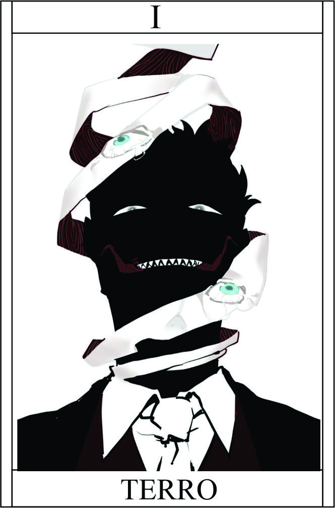

Terro
Têndencia: Maligno
Passiva - Olhos da Angústia:
A fita carregada pelo usuário possui vários olhos chorando, representando a dor, tristeza e sofrimento que ele é capaz de controlar. Essa fita confere poderes relacionados à intensificação da dor física e manipulação emocional. Aumenta a perceção +1
Legado 1 - Lágrimas Penetrantes:
Ao encarar o alvo, o usuário é capaz de projetar feixes de lágrimas intensas dos olhos da fita em direção ao alvo. Essas lágrimas causam uma dor física extremamente intensa, capaz de penetrar na pele e afetar diretamente o sistema nervoso do alvo. Essa habilidade requer um contato visual contínuo para ser mantida.
Dano: 5 true
Condição para ativar a habilidade: O usuário precisa fazer contato visual direto com o alvo.
Legado 2 - Abraço da Melancolia:
tocar o alvo, o usuário envolve-o em uma aura de tristeza profunda e melancolia. Isso causa um aumento significativo na sensação de tristeza e sofrimento emocional do alvo, levando-o a um estado de desespero e angústia. O usuário é capaz de controlar a intensidade dessa emoção durante o contato físico.
10% da vida maximo do alvo
O usuário precisa tocar fisicamente o alvo.
Legado 3 - Tormento Ardente:
O usuário concentra sua energia na fita, que começa a emanar chamas negras. Essas chamas são capazes de infligir uma dor física extrema no alvo atingido. Quanto mais tempo o alvo permanecer exposto às chamas, mais intensa será a dor e o sofrimento causados. Essa habilidade requer foco e concentração contínuos para ser mantida.
Quando você tiver sucesso no teste a chama ficará ainda no alvo que não conseguiu resistir, causando 5 de dano por Round.
O usuário precisa canalizar sua energia através da fita.
Legado 4 - Choro da Agonia:
O usuário libera uma onda de energia carregada com sua própria tristeza e sofrimento. Essa energia afeta todos ao seu redor, mergulhando-os em uma sensação avassaladora de agonia e desespero. Aqueles afetados pela habilidade experimentam uma dor emocional intensa, que pode levar a um estado de vulnerabilidade e desequilíbrio emocional.
O alvo fica sensivel para os proximos ataques, dimuindo consciência -2.
Última: Rosto da Aflição
A ter sucesso no teste libera a habilidade, Última: Rosto da Aflição
.
O usuário revela seu verdadeiro rosto, que é grotesco e perturbador, emitindo uma aura de puro terror. Aqueles que olham diretamente para o rosto do usuário entram em um estado de pânico tão intenso que pode causar-lhes uma reação física, levando-os a vomitar sangue. Essa habilidade requer um controle emocional excepcional, pois o usuário também é afetado pela aura aterrorizante que emana de seu próprio rosto.
Primeira etapa: Diminuir -2 em consciência | causa 50% da vida atual | Alvo deverá fazer teste de trauma para não ficar com medo de ver você de novo.
Condição para ativar a habilidade: uO usuário precisa canalizar sua tristeza e sofrimento pessoais.